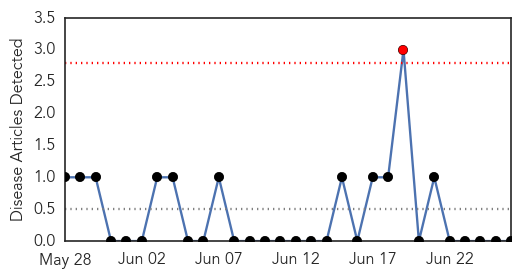
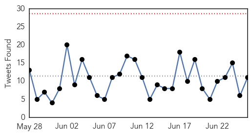

Mold/Fungal
30-Day Web Trend
1 alerts, 0 warnings

30-Day Twitter Trend
0 alerts, 0 warnings

Article Locations


Article Confidences

Top Articles:
-
No articles found for Jun 26, 2015
Top Tweets:
-
No tweets found for Jun 26, 2015
Ebola
30-Day Web Trend
30-Day Twitter Trend
0 alerts, 0 warnings

Article Locations


Article Confidences

Top Articles:
- 1.000
- Ebola diagnosis now possible within minutes
- 1.000
- Sierra Leone, Guinea quarantine people, villages again
- 1.000
- Ebola detected within MINUTES with new test device
- 1.000
- Sudan Vision Daily
- 0.999
- Ebola genome insights indicate that containment worked
- 0.998
- New bedside test predicts Ebola infection in minutes
- 0.998
- Liberian bikers use Ebola suits as raincoats
- 0.996
- Dexter Daily Statesman: Local News: Epidemiologist advises no fear of Ebola (06
- 0.994
- Changes in Screening and Monitoring of Travelers Returning from Liberia
- 0.992
- Helping Guinean communities fight Ebola
- 0.991
- Finger-prick test can diagnose Ebola as easily as a pregnancy test
- 0.991
- Patient trial validates Ebola rapid test - Health, Science and Environment
- 0.987
- Researchers frustrated by failure to roll out 'game-changing' Ebola test : Nature News & Comment
- 0.972
- Leaders Praised For Ebola Response - Sierra Leone
- 0.917
- Port Loko Ebola Response Coordinator Debunks MP
- 0.901
- Sierra Leone Envoy in China Presents Post-Ebola Recovery Strategy to Chinese Authorities: Sierra Leone News
- 0.803
- NigerianEcho — Plateau state Govt re-trains Health Workers to Handle Ebola disease as Virus re-emerges in Sierra Leone
- 0.715
- Sierra Leone: Appeal of child orphaned by Ebola
- 0.710
- Doctor honoured for helping tackle Ebola in West Africa
- 0.697
- Ganta Ebola Monument Center dedicated
- 0.678
- Before the Next Ebola Strikes: Lessons Learned
- 0.675
- Central African Republic
- 0.643
- Chevron Briefs Health Ministry on Plans to Support Part of Sierra Leone Post-Ebola Recovery: Sierra Leone News
- 0.632
- ICAO’s visit and emergency medical vigilance at airports
- 0.552
- APC political activist urge Sierra Leoneans in Gambia to be law-abiding
Top Tweets:
- 0.955
- Ebola Update: 27467 confirmed probable & suspected cases reported in 3 most affected countries with 11217 deaths. EbolaResponse
- 0.855
- If people do not change their attitude there are bound to be more Ebola cases -Patrick Fatoma Nat'l Ebola Response Center SierraLeone
- 0.780
- Sierra Leone: A Survivor's Mission to 'Revenge' on Ebola - Awareness Times http://t.co/DQF9PKPmJY ebola EVD
- 0.709
- Patient trial validates Ebola rapid test - New Vision http://t.co/Edy730RWW4 ebola EVD
- 0.708
- Ebola digs in its heels: Why the virus won't go away in West Africa http://t.co/K0RqaPP0f5
- 0.694
- Broadmoor Hospital nurse helping with Ebola fight nominated for top industry ... - getreading http://t.co/3VU7SeSNqK ebola EVD
- 0.670
- New study reveals key part of Ebola virus life cycle at higher resolution than ... - News-Medica http://t.co/GO2vMvtsR3 ebola EVD
- 0.590
- Ebola-hit Sierra Leone quarantines 31 health workers:... http://t.co/VWPBDNkiKl
- 0.576
- Actor Adopts Ebola Victims' Kids - GhanaWeb http://t.co/mxHAL3Xzm5 ebola EVD
- 0.521
- New bedside test predicts Ebola infection in minutes - The Conversation AU http://t.co/y2Z3duKwcb ebola EVD
- 0.508
- A Rapid Ebola Test Can Diagnose the Disease In Just Minutes - TIME http://t.co/DtJD8kIiOC